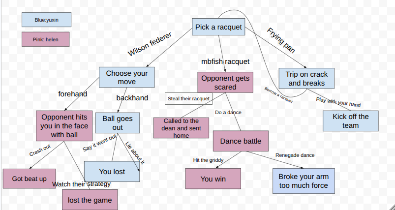

For this SEP 10 project, we were assigned to create an adventure story with a partner. The purpose of the project was to use our command line skils such as git add,commit,push, pull etc. We also got to practice our collaboration skiils and using what we learn on linking files. My partner and I chose how to win against goldstein, where our project was about a normal tennis match and each choice had different results.
In this project, i created an interactive adventure story with multiple different outcomes. The story starts off with a tennis match against goldstein. At the start you get to choose what racquet you wanted,depending on what racquet you pick,it'll lead to different outcomes. My main goal was to make it engaging and fun for people to try it. Also allowing players to explore the different outcomes to each choice they had to make.
One of the most difficult part of doing this project was creating the different choices. It was diffcult as we were allowed to create anything we wanted. We had alot of ideas but also didn't want to make to much as we wouldn't have enough time to link everything and finish. Me and my partner were able to do what we want without a abrupt ending and we were able to finish on time.
Another challenge was making sure I use Git commands. Me and my partner would make small mistakes,such as forgetting spaces in the commands or mispelling words which made the commands not work. We had to go bak carefully and review to fix them.
Next time when working on projects,I will manage my time more efficiently. If i gotten more time i would of made this project more engaging and more fun for others. I would also added more and also add more visuals using HTML and CSS
Preview of Project